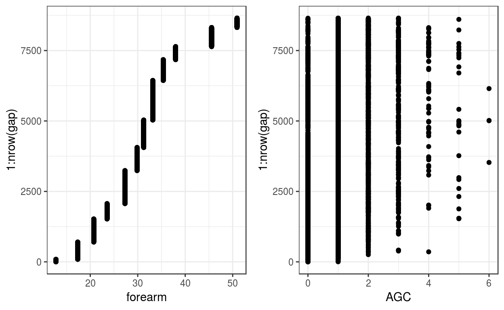
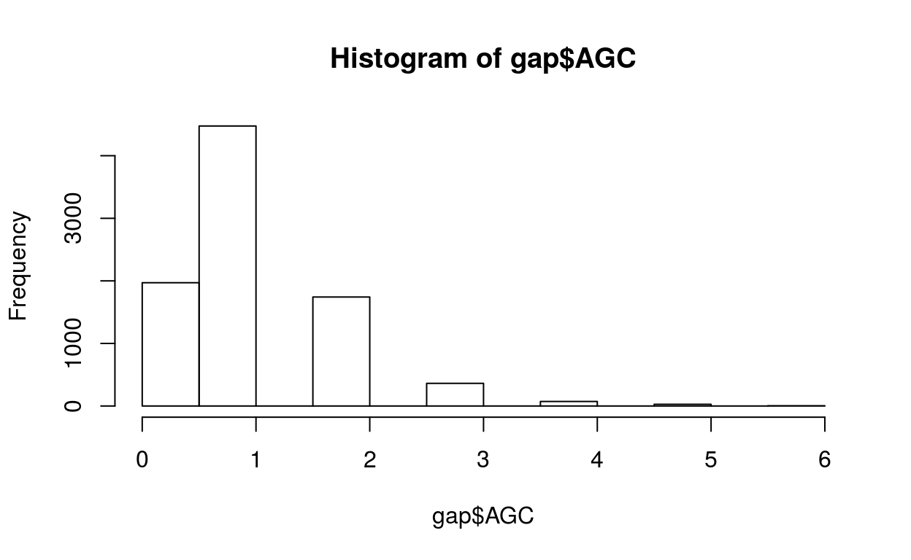
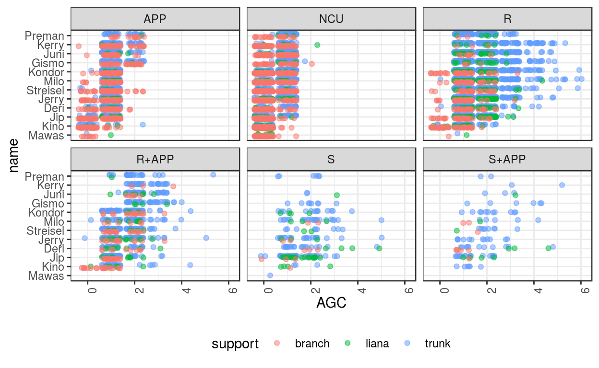
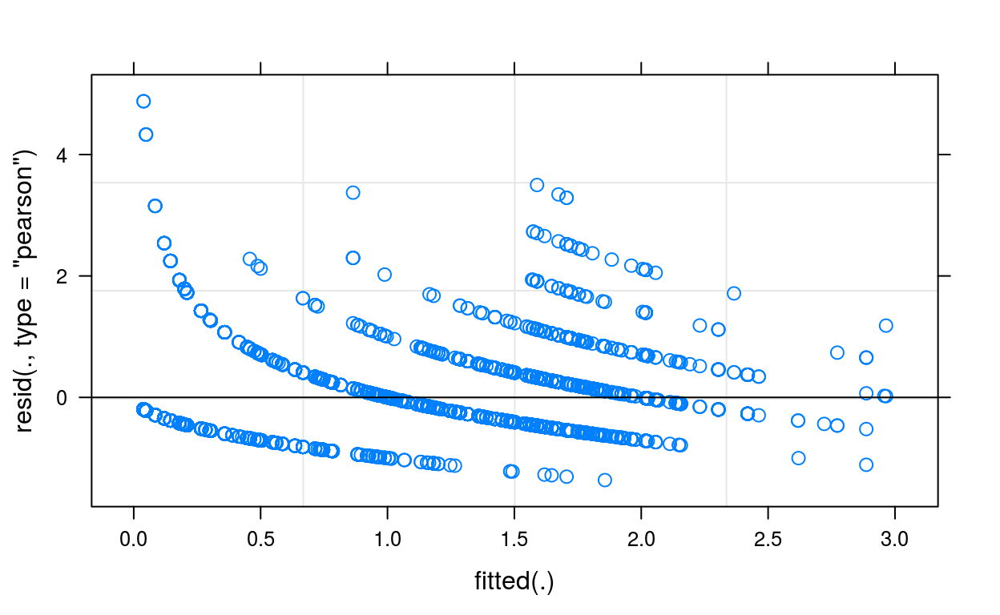
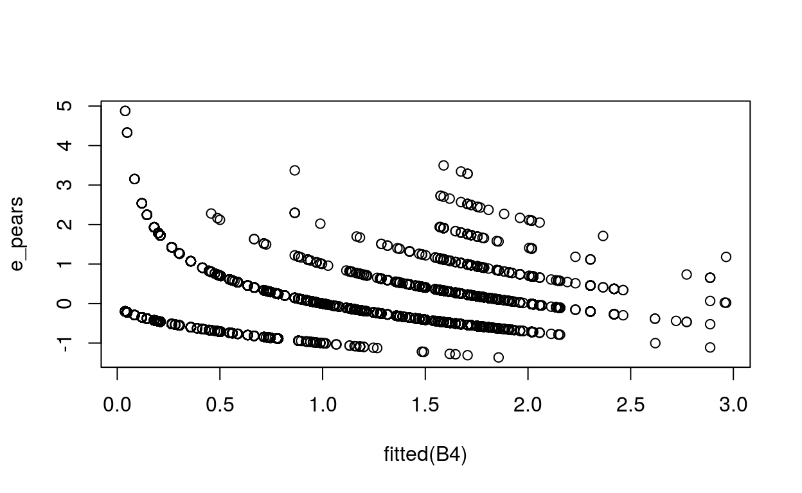
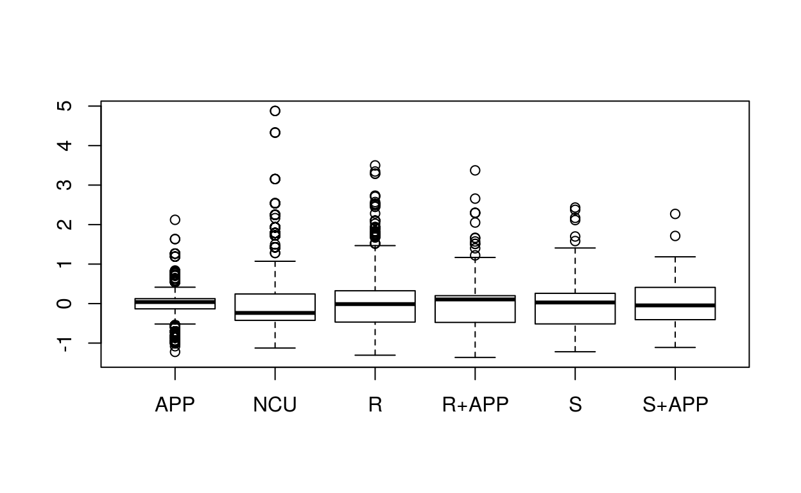
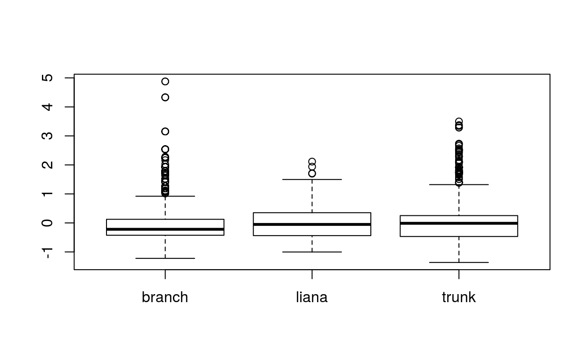
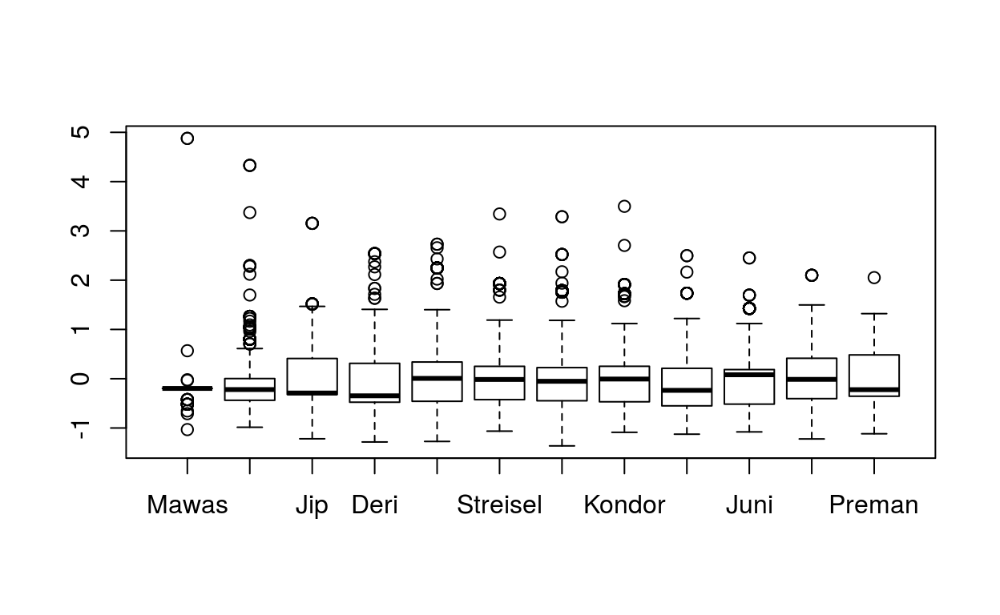
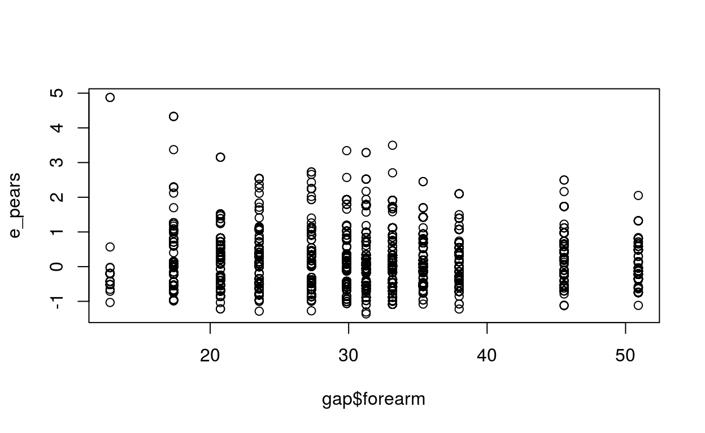
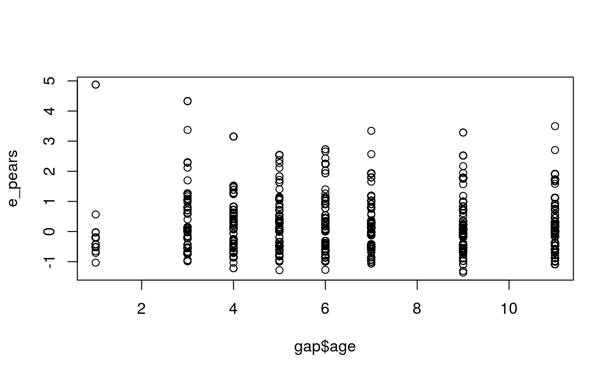

В этом посте будет Zero Inflated Poisson модель.
library(tidyverse)
library(cowplot)
library(ggplot2)
theme_set(theme_bw())
library(readxl)
library(lme4)
library(glmmADMB)
library(glmmTMB)
library(sjstats)
library(emmeans)
gap <- read_excel('../../_data/gap-crossing-behaviour-Chappell-et-al-2015.xlsx', sheet = 1)
colnames(gap) <- c('name', 'age', 'forearm', 'AGC', 'behaviour', 'support')
gap <- gap %>% mutate(name = factor(name),
behaviour = factor(behaviour),
support = factor(support),
forearm_std = as.numeric(scale(forearm)))
gap$name <- reorder(gap$name, gap$age, mean)Данные о поведении орангутанов (Chappell, Phillips, Noordwijk, Setia, & Thorpe, 2015).
Бла-бла
Очень несбалансированные данные. По одному орангутану каждого возраста (и с соотв. длиной руки). Много наблюдений за каждым орангутаном. Не все сочетания типа поведения и опоры есть для каждого орангутана.
with(gap, table(name, behaviour, support))
, , support = branch
behaviour
name APP NCU R R+APP S S+APP
Mawas 8 70 1 0 0 0
Kino 74 299 62 21 1 0
Jip 131 199 52 20 3 1
Deri 73 133 30 9 3 5
Jerry 114 231 51 13 2 0
Streisel 145 225 31 21 0 1
Milo 94 187 39 6 2 2
Kondor 126 224 46 17 0 0
Gismo 39 39 4 0 0 0
Juni 30 92 9 6 0 0
Kerry 54 85 3 3 0 0
Preman 14 21 2 0 0 0
, , support = liana
behaviour
name APP NCU R R+APP S S+APP
Mawas 1 6 1 0 0 0
Kino 4 12 23 7 4 0
Jip 10 13 47 9 21 4
Deri 7 5 26 9 4 3
Jerry 14 18 66 13 3 0
Streisel 4 5 17 6 2 1
Milo 11 12 56 8 3 1
Kondor 6 9 45 4 4 0
Gismo 1 5 18 4 0 0
Juni 5 9 23 7 1 1
Kerry 2 7 7 0 0 0
Preman 1 3 5 1 0 0
, , support = trunk
behaviour
name APP NCU R R+APP S S+APP
Mawas 1 0 1 0 1 0
Kino 20 11 37 29 3 6
Jip 28 38 135 53 38 17
Deri 33 22 121 30 21 11
Jerry 83 67 388 75 22 12
Streisel 57 39 192 57 9 8
Milo 69 112 293 52 22 5
Kondor 112 153 550 84 14 11
Gismo 64 108 344 38 8 6
Juni 71 129 309 42 2 3
Kerry 46 24 198 32 0 2
Preman 30 67 156 26 6 2
plot_grid(
ggplot(gap, aes(x = forearm, y = 1:nrow(gap))) + geom_point(),
ggplot(gap, aes(x = AGC, y = 1:nrow(gap))) + geom_point(),
nrow = 1)
mean(gap$AGC == 0)
[1] 0.227693
hist(gap$AGC)
pos <- position_jitterdodge(jitter.width = 0.2, jitter.height = 0.4, dodge.width = 0.5)
ggplot(gap, aes(x = name, y = AGC, fill = support, colour = support)) +
geom_point(alpha = 0.5, position = pos) +
facet_wrap(~ behaviour) +
coord_flip() +
theme(legend.position = 'bottom', axis.text.x = element_text(angle = 90, hjust = 1))
M1 <- glmer(AGC ~ (behaviour + support + forearm_std)^2 + (1|name), data = gap, family = 'poisson', control = glmerControl(optimizer = 'bobyqa',
optCtrl = list(maxfun = 2e6)))
AIC(M1)
[1] 17879.32
overdisp(M1)
# Overdispersion test
dispersion ratio = 0.3507
Pearson's Chi-Squared = 3024.4958
p-value = 1.0000
# Сверхдисперсии нет!!! Можно было бы продолжать дальше так
plot(M1)
# M2 <- glmer.nb(AGC ~ (behaviour + support + forearm_std)^2 + (1|name), data = gap)
# overdisp(M2)
# M3 <- glmer(AGC ~ (behaviour + support + forearm_std)^2 + (1|name) + (1|OLRI), data = gap, family = 'poisson')
# overdisp(M3)
Z1 <- glmmadmb(AGC ~ (behaviour + support + forearm_std)^2 , data = gap, family = 'poisson', zeroInflation = TRUE, random = ~ (1|name))
summary(Z1)
Call:
glmmadmb(formula = AGC ~ (behaviour + support + forearm_std)^2,
data = gap, family = "poisson", random = ~(1 | name), zeroInflation = TRUE)
AIC: 17881.3
Coefficients:
Estimate Std. Error z value Pr(>|z|)
(Intercept) -0.1841 0.0637 -2.89 0.00384 **
behaviourNCU -1.5694 0.0688 -22.80 < 2e-16 ***
behaviourR 0.2361 0.0688 3.43 0.00060 ***
behaviourR+APP 0.6088 0.0894 6.81 9.9e-12 ***
behaviourS 0.6982 0.2653 2.63 0.00849 **
behaviourS+APP 0.4322 0.3221 1.34 0.17962
supportliana 0.1712 0.1291 1.33 0.18485
supporttrunk 0.1119 0.0552 2.03 0.04241 *
forearm_std 0.4475 0.0545 8.22 < 2e-16 ***
behaviourNCU:supportliana 0.7666 0.2048 3.74 0.00018 ***
behaviourR:supportliana 0.1108 0.1481 0.75 0.45453
behaviourR+APP:supportliana -0.1174 0.1795 -0.65 0.51322
behaviourS:supportliana -0.0566 0.3131 -0.18 0.85649
behaviourS+APP:supportliana 0.4575 0.4011 1.14 0.25401
behaviourNCU:supporttrunk 1.2654 0.0908 13.94 < 2e-16 ***
behaviourR:supporttrunk 0.2517 0.0830 3.03 0.00242 **
behaviourR+APP:supporttrunk -0.0423 0.1053 -0.40 0.68787
behaviourS:supporttrunk -0.0737 0.2748 -0.27 0.78851
behaviourS+APP:supporttrunk 0.3165 0.3341 0.95 0.34340
behaviourNCU:forearm_std 0.1650 0.0445 3.71 0.00021 ***
behaviourR:forearm_std -0.1078 0.0372 -2.90 0.00373 **
behaviourR+APP:forearm_std 0.0119 0.0461 0.26 0.79588
behaviourS:forearm_std -0.0583 0.0703 -0.83 0.40728
behaviourS+APP:forearm_std 0.0363 0.0830 0.44 0.66178
supportliana:forearm_std -0.2707 0.0550 -4.92 8.8e-07 ***
supporttrunk:forearm_std -0.2393 0.0384 -6.23 4.6e-10 ***
---
Signif. codes: 0 '***' 0.001 '**' 0.01 '*' 0.05 '.' 0.1 ' ' 1
Number of observations: total=8652, name=12
Random effect variance(s):
Group=name
Variance StdDev
(Intercept) 0.0296 0.1721
Zero-inflation: 1e-06 (std. err.: 3.318e-10 )
Log-likelihood: -8912.67
p <- length(fixef(Z1)) + length(ranef(Z1)) + Z1$zeroInflation
sum(resid(Z1, type = 'pearson')^2) / (nrow(gap) - p)
[1] 0.3507148
# Вот как считает пирсоновские остатки glmmADMB
# Z1$residuals/Z1$sd.est, внутри знаменатель, видимо, считается как sqrt(mu):
# getAnywhere(residuals.glmmadmb)
# Сверхдисперсия вручную
# Пуассоновская часть
X_count <- model.matrix(~ (behaviour + support + forearm_std)^2, data = gap)
beta_count <- fixef(Z1)
name_ID <- as.numeric(as.factor(gap$name))
a <- ranef(Z1)$name
mu_count <- exp(X_count %*% beta_count + a[name_ID])
# fitted(Z1) это на самом деле mu_count
# head(cbind(fitted(Z1), mu_count, E_y))
# Биномиальная часть отсутствует. Не понимаю, как это получается, но ее результаты уже включены в пуассоновскую часть
# И вот это уже можно не включать в расчеты
# pi_zi <- exp(Z1$pz)/(1 + exp(Z1$pz))
# Считаем пирсоновские остатки вручную
# Формулы для матожидания и дисперсии будут
# использоваться для Пуассоновской части
# E(y) = mu
# Var(y) = mu
E_y <- mu_count
Var_y <- mu_count
# And calculate the Pearson residuals
e_pears <- (gap$AGC - E_y) / sqrt(Var_y)
N <- nrow(gap)
p <- length(fixef(Z1)) + length(ranef(Z1)) + Z1$zeroInflation
sum(e_pears^2)/(N - p)
[1] 0.3507103Альтернативный вариант подбора в glmmTMB быстрый, но нет полезных функций. Например, Пирсоновские остатки приходится считать вручную.
B1 <- glmmTMB(AGC ~ (behaviour + support + forearm_std)^2 + (1|name), data = gap, family = 'poisson')
overdisp(B1)
# Overdispersion test
dispersion ratio = 0.3507
Pearson's Chi-Squared = 3024.4902
p-value = 1.0000
# B2 <- glmmTMB(AGC ~ (behaviour + support + forearm_std)^2 + (1|name), data = gap, family = 'NB2')
# overdisp(B2)
#
# B3 <- glmmTMB(AGC ~ (behaviour + support + forearm_std)^2 + (1|name) + (1|OLRI), data = gap, family = 'poisson')
# overdisp(B3)
B4 <- glmmTMB(AGC ~ (behaviour + support + forearm_std)^2 + (1|name), data = gap, family = poisson, ziformula = ~ 1)
summary(B4)
Family: poisson ( log )
Formula:
AGC ~ (behaviour + support + forearm_std)^2 + (1 | name)
Zero inflation: ~1
Data: gap
AIC BIC logLik deviance df.resid
17881.3 18079.2 -8912.7 17825.3 8624
Random effects:
Conditional model:
Groups Name Variance Std.Dev.
name (Intercept) 0.02942 0.1715
Number of obs: 8652, groups: name, 12
Conditional model:
Estimate Std. Error z value Pr(>|z|)
(Intercept) -0.18405 0.06367 -2.891 0.003842 **
behaviourNCU -1.56937 0.06882 -22.804 < 2e-16 ***
behaviourR 0.23611 0.06884 3.430 0.000604 ***
behaviourR+APP 0.60875 0.08942 6.808 9.89e-12 ***
behaviourS 0.69823 0.26528 2.632 0.008488 **
behaviourS+APP 0.43219 0.32209 1.342 0.179656
supportliana 0.17116 0.12908 1.326 0.184847
supporttrunk 0.11193 0.05515 2.029 0.042413 *
forearm_std 0.44749 0.05445 8.218 < 2e-16 ***
behaviourNCU:supportliana 0.76663 0.20477 3.744 0.000181 ***
behaviourR:supportliana 0.11078 0.14813 0.748 0.454537
behaviourR+APP:supportliana -0.11735 0.17948 -0.654 0.513226
behaviourS:supportliana -0.05660 0.31308 -0.181 0.856529
behaviourS+APP:supportliana 0.45754 0.40108 1.141 0.253971
behaviourNCU:supporttrunk 1.26545 0.09079 13.939 < 2e-16 ***
behaviourR:supporttrunk 0.25166 0.08296 3.033 0.002418 **
behaviourR+APP:supporttrunk -0.04231 0.10534 -0.402 0.687949
behaviourS:supporttrunk -0.07369 0.27477 -0.268 0.788549
behaviourS+APP:supporttrunk 0.31654 0.33406 0.948 0.343361
behaviourNCU:forearm_std 0.16504 0.04448 3.710 0.000207 ***
behaviourR:forearm_std -0.10776 0.03716 -2.900 0.003730 **
behaviourR+APP:forearm_std 0.01191 0.04606 0.259 0.795888
behaviourS:forearm_std -0.05825 0.07030 -0.829 0.407300
behaviourS+APP:forearm_std 0.03633 0.08303 0.438 0.661724
supportliana:forearm_std -0.27069 0.05505 -4.918 8.76e-07 ***
supporttrunk:forearm_std -0.23934 0.03840 -6.233 4.57e-10 ***
---
Signif. codes: 0 '***' 0.001 '**' 0.01 '*' 0.05 '.' 0.1 ' ' 1
Zero-inflation model:
Estimate Std. Error z value Pr(>|z|)
(Intercept) -22.69 1088.21 -0.021 0.983
# пирсоновские остатки не считаются
# resid(B4, type = 'pearson')
# overdisp(B4)
# Сверхдисперсия вручную
# Пуассоновская часто
X_count <- model.matrix(~ (behaviour + support + forearm_std)^2, data = gap)
beta_count <- fixef(B4)$cond
name_ID <- as.numeric(as.factor(gap$name))
a <- ranef(B4)$cond$name
mu_count <- exp(X_count %*% beta_count + a[name_ID,])
# Биномиальная часть
X_zi <- model.matrix(~ 1, data = gap)
beta_zi <- fixef(B4)$zi
pi_zi <- exp(X_zi %*% beta_zi)/(1 + exp(X_zi %*% beta_zi))
# Считаем пирсоновские остатки вручную
# Формулы для матожидания и дисперсии
# E(y) = (1 - pi_zi) * mu
# Var(y) = mu + pi / (1 - pi) * mu^2
# Кстати, это так же = (1−π)μ(1+μπ)
E_y <- (1 - pi_zi) * mu_count
Var_y <- mu_count + pi_zi / (1 - pi_zi) * mu_count^2
# Пирсоновские остатки
e_pears <- (gap$AGC - E_y) / sqrt(Var_y)
# Сверхдисперсия
N <- nrow(gap)
p <- length(fixef(B4)$cond) + length(fixef(B4)$zi) + 1
sum(e_pears^2)/(N - p)
[1] 0.3507066
# Ок
# Графики остатков
plot(fitted(B4), e_pears)
plot(gap$behaviour, e_pears)
plot(gap$support, e_pears)
plot(gap$name, e_pears)
plot(gap$forearm, e_pears)
plot(gap$age, e_pears)
# Chappell, J., Phillips, A. C., Noordwijk, M. A. van, Setia, T. M., & Thorpe, S. K. (2015). The ontogeny of gap crossing behaviour in bornean orangutans (pongo pygmaeus wurmbii). PloS One, 10(7), e0130291.